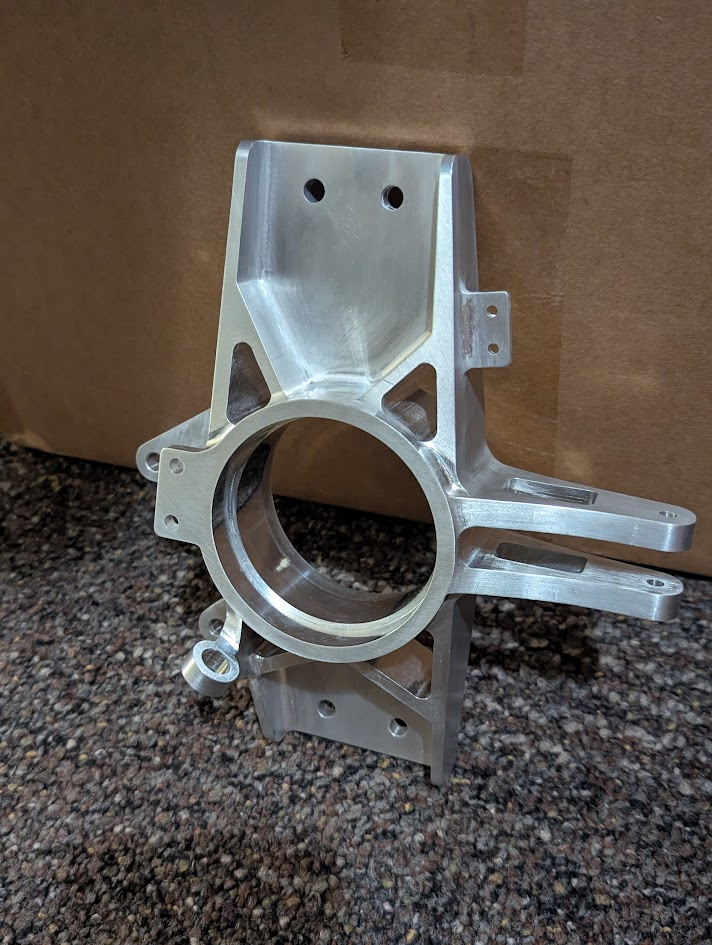
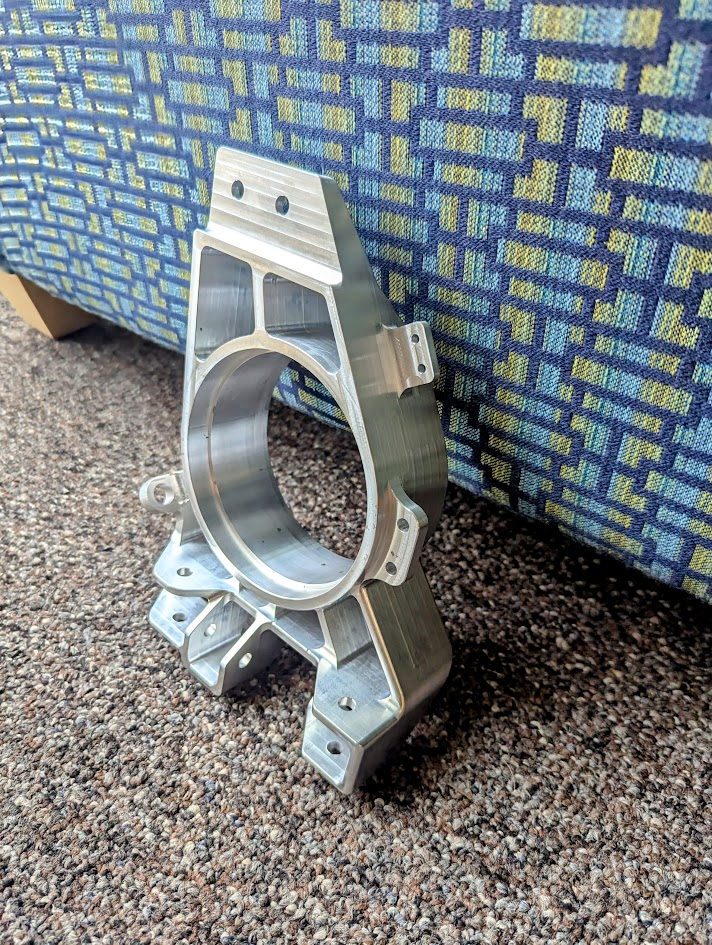

by Nathan Su
As the hubs and uprights subsystem captain for Bronco Motorsports, I was responsible for the designing, manufacturing, and testing of the car's hubs and uprights. This is an essential system to the car, as it structurally connects the wheel to the rest of the suspension system and also serves as the mounting point for the brakes and steering arms.